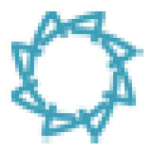

← Volver a la propuesta
DEMO INTERACTIVA
Datos ficticios · Acciones guardadas en este navegador · Sin envíos reales
Web de Amanus ↗
Ver como
Vicky · Ingresante
Sofía · Empleada
Martín · Empleado
Superadmin
Sonido: activado
Fuentes y alcance
Reiniciar

amanus
PERSONAS QUE CUIDAN
Ver administración ↗
V
×